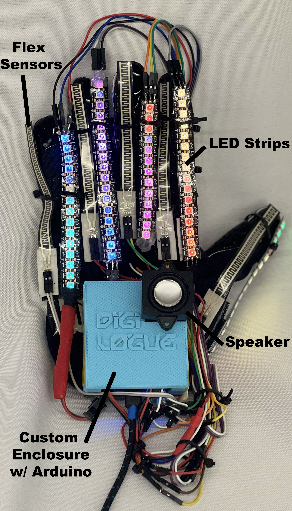

Arduino Micro circuit layout:

Bill of Materials:
| Item | Source | Price | Quantity |
|---|---|---|---|
| Arduino Micro | Amazon | $26.95 | 1 |
| Flex Sensor 2.2" (SEN-10264) | Sparkfun | $10.95 | 5 |
| BTF-LIGHTING WS2812B RGB 5050SMD Individual Addressable 3.3FT 144 | Amazon | $21.99 | 1 |
| StarTech.com 1 ft Mobile Charge Sync USB to Slim Micro USB Cable | Amazon | $4.95 | 1 |
| Zip Wire Ties 300Pcs Small Cable Zip Ties | Amazon | $6.95 | 1 |
| Grip Boost DNA Football Gloves with Engineered Grip | Amazon | $50.00 | 1 |
| MakerHawk 2pcs Ar duino Speaker 3 Watt 8 Ohm | Amazon | $8.99 | 1 |
| ElectroCookie Solderable Breadboard PCB Board (Blue) | Amazon | $11.99 | 1 |
| ELEGOO 120pcs Multicolored Dupont Wire | Amazon | $6.99 | 1 |
| Total | $149.76 |
Digilogue 3D-printed case files:
Libraries:
https://github.com/FastLED/FastLED
https://github.com/sensorium/Mozzi
https://github.com/arduino-libraries/MIDIUSB
Flex sensor MIDI control code:
#include "pitches.h"
#include
// Constants:
// Initialize flex sensor pins
const int flexPin0 = A0; // pinky
const int flexPin1 = A1; // ring
const int flexPin2 = A2; // middle
const int flexPin3 = A3; // index
const int flexPin4 = A4; // thumb
// Variables:
// Saving analog value on analogRead
int value0;
int value1;
int value2;
int value3;
int value4;
// Flex conversions
int flex;
int full_flex = 0;
int major_flex = 1;
int some_flex = 100;
int no_flex = 300;
int bpm = 72; // beats per minute
// duration of a beat in ms
float beatDuration = 60.0 / bpm * 1000;
// the melody sequence:
int melody[] = {64, 66, 71, 73, 74, 66, 64, 73, 71, 66, 74, 73};
// which note of the melody to play:
int noteCounter = 0;
void setup(){
Serial.begin(115200); //Begin serial communication
pinMode(A0, INPUT); // set pull-up on analog pin 0
pinMode(A1, INPUT); // set pull-up on analog pin 0
pinMode(A2, INPUT); // set pull-up on analog pin 0
pinMode(A3, INPUT); // set pull-up on analog pin 0
pinMode(A4, INPUT); // set pull-up on analog pin 0
}
void loop(){
value0 = analogRead(flexPin0); //Read and save analog value from flex sensors
value1 = analogRead(flexPin1);
value2 = analogRead(flexPin2);
value3 = analogRead(flexPin3);
value4 = analogRead(flexPin4);
Serial.println(value0);
int flexPinky = map(value0, 0, 1023, 100, 1000);
// play a note from the melody:
// midiCommand(0x90, melody[noteCounter], 0x7F);
midiCommand(0x90, flexPinky, 0x7F);
// all the notes in this are sixteenth notes,
// which is 1/4 of a beat, so:
int noteDuration = beatDuration / 4;
// keep it on for the appropriate duration:
delay(flexPinky);
// turn the note off:
midiCommand(0x80, melody[noteCounter], 0);
// increment the note number for next time through the loop:
noteCounter++;
// keep the note in the range from 0 - 11 using modulo:
noteCounter = noteCounter % 12;
}
void midiCommand(byte cmd, byte data1, byte data2) {
// First parameter is the event type (top 4 bits of the command byte).
// Second parameter is command byte combined with the channel.
// Third parameter is the first data byte
// Fourth parameter second data byte
midiEventPacket_t midiMsg = {cmd >> 4, cmd, data1, data2};
MidiUSB.sendMIDI(midiMsg);
}
Pitches.h code:
/*************************************************
* Public Constants
*************************************************/
#define NOTE_B0 31
#define NOTE_C1 33
#define NOTE_CS1 35
#define NOTE_D1 37
#define NOTE_DS1 39
#define NOTE_E1 41
#define NOTE_F1 44
#define NOTE_FS1 46
#define NOTE_G1 49
#define NOTE_GS1 52
#define NOTE_A1 55
#define NOTE_AS1 58
#define NOTE_B1 62
#define NOTE_C2 65
#define NOTE_CS2 69
#define NOTE_D2 73
#define NOTE_DS2 78
#define NOTE_E2 82
#define NOTE_F2 87
#define NOTE_FS2 93
#define NOTE_G2 98
#define NOTE_GS2 104
#define NOTE_A2 110
#define NOTE_AS2 117
#define NOTE_B2 123
#define NOTE_C3 131
#define NOTE_CS3 139
#define NOTE_D3 147
#define NOTE_DS3 156
#define NOTE_E3 165
#define NOTE_F3 175
#define NOTE_FS3 185
#define NOTE_G3 196
#define NOTE_GS3 208
#define NOTE_A3 220
#define NOTE_AS3 233
#define NOTE_B3 247
#define NOTE_C4 262
#define NOTE_CS4 277
#define NOTE_D4 294
#define NOTE_DS4 311
#define NOTE_E4 330
#define NOTE_F4 349
#define NOTE_FS4 370
#define NOTE_G4 392
#define NOTE_GS4 415
#define NOTE_A4 440
#define NOTE_AS4 466
#define NOTE_B4 494
#define NOTE_C5 523
#define NOTE_CS5 554
#define NOTE_D5 587
#define NOTE_DS5 622
#define NOTE_E5 659
#define NOTE_F5 698
#define NOTE_FS5 740
#define NOTE_G5 784
#define NOTE_GS5 831
#define NOTE_A5 880
#define NOTE_AS5 932
#define NOTE_B5 988
#define NOTE_C6 1047
#define NOTE_CS6 1109
#define NOTE_D6 1175
#define NOTE_DS6 1245
#define NOTE_E6 1319
#define NOTE_F6 1397
#define NOTE_FS6 1480
#define NOTE_G6 1568
#define NOTE_GS6 1661
#define NOTE_A6 1760
#define NOTE_AS6 1865
#define NOTE_B6 1976
#define NOTE_C7 2093
#define NOTE_CS7 2217
#define NOTE_D7 2349
#define NOTE_DS7 2489
#define NOTE_E7 2637
#define NOTE_F7 2794
#define NOTE_FS7 2960
#define NOTE_G7 3136
#define NOTE_GS7 3322
#define NOTE_A7 3520
#define NOTE_AS7 3729
#define NOTE_B7 3951
#define NOTE_C8 4186
#define NOTE_CS8 4435
#define NOTE_D8 4699
#define NOTE_DS8 4978
On-board synthesisizer control code (adapted from Mozzi example sketch:
#include
#include
#include
#include
#define CONTROL_RATE 256
#define THERMISTOR_PIN 1
#define LDR_PIN 2
#define NUM_VOICES 8
#define THRESHOLD 10
// harmonics
Oscil aCos1(COS8192_DATA);
Oscil aCos2(COS8192_DATA);
Oscil aCos3(COS8192_DATA);
Oscil aCos4(COS8192_DATA);
Oscil aCos5(COS8192_DATA);
Oscil aCos6(COS8192_DATA);
Oscil aCos7(COS8192_DATA);
Oscil aCos0(COS8192_DATA);
// volume controls
Oscil kVol1(COS8192_DATA);
Oscil kVol2(COS8192_DATA);
Oscil kVol3(COS8192_DATA);
Oscil kVol4(COS8192_DATA);
Oscil kVol5(COS8192_DATA);
Oscil kVol6(COS8192_DATA);
Oscil kVol7(COS8192_DATA);
Oscil kVol0(COS8192_DATA);
// audio volumes updated each control interrupt and reused in audio till next control
char v1,v2,v3,v4,v5,v6,v7,v0;
// notes to play depending on whether temperature reading increases or decreases
float upnotes[NUM_VOICES] = {
mtof(62.f),mtof(64.f),mtof(70.f),mtof(72.f),mtof(79.f),mtof(81.f), mtof(86.f), mtof(88.f)};
float downnotes[NUM_VOICES] = {
mtof(64.f),mtof(65.f),mtof(88.f),mtof(72.f),mtof(79.f),mtof(84.f),mtof(86.f),mtof(89.f)};
void setup(){
startMozzi(CONTROL_RATE);
}
// returns freq
int temperatureToFreq(char oscil_num, int temperature){
static int previous_temperature;
int freq;
if (temperature>previous_temperature){
freq = upnotes[oscil_num];
} else {
freq = downnotes[oscil_num];
}
previous_temperature = temperature;
return freq;
}
void updateControl(){
static float previous_pulse_freq;
// read analog inputs
int temperature = mozziAnalogRead(THERMISTOR_PIN); // not calibrated to degrees!
int light = mozziAnalogRead(LDR_PIN);
// map light reading to volume pulse frequency
float pulse_freq = (float)light/256;
previous_pulse_freq = pulse_freq;
v0 = kVol0.next();
v1 = kVol1.next();
v2 = kVol2.next();
v3 = kVol3.next();
v4 = kVol4.next();
v5 = kVol5.next();
v6 = kVol6.next();
v7 = kVol7.next();
// set one note oscillator frequency each time (if it's volume is close to 0)
static char whoseTurn;
switch(whoseTurn){
case 0:
kVol0.setFreq(pulse_freq);
if(abs(v0)=NUM_VOICES) whoseTurn = 0;
}
AudioOutput_t updateAudio(){
long asig = (long)
aCos0.next()*v0 +
aCos1.next()*v1 +
aCos2.next()*v2 +
aCos3.next()*v3 +
aCos4.next()*v4 +
aCos5.next()*v5 +
aCos6.next()*v6 +
aCos7.next()*v7;
return MonoOutput::fromAlmostNBit(18, asig);
}
void loop(){
audioHook();
}
LED integration code, adapted from FastLED example sketch:
#include
#define LED_PIN 5
#define NUM_LEDS 78
#define BRIGHTNESS 10
#define LED_TYPE WS2811
#define COLOR_ORDER GRB
CRGB leds[NUM_LEDS];
#define UPDATES_PER_SECOND 100
CRGBPalette16 currentPalette;
TBlendType currentBlending;
extern CRGBPalette16 myRedWhiteBluePalette;
extern const TProgmemPalette16 myRedWhiteBluePalette_p PROGMEM;
void setup() {
delay( 3000 ); // power-up safety delay
FastLED.addLeds(leds, NUM_LEDS).setCorrection( TypicalLEDStrip );
FastLED.setBrightness(BRIGHTNESS);
currentPalette = RainbowColors_p;
currentBlending = LINEARBLEND;
}
void loop()
{
ChangePalettePeriodically();
static uint8_t startIndex = 0;
startIndex = startIndex + 1; /* motion speed */
FillLEDsFromPaletteColors( startIndex);
FastLED.show();
FastLED.delay(1000 / UPDATES_PER_SECOND);
}
void FillLEDsFromPaletteColors( uint8_t colorIndex)
{
uint8_t brightness = 255;
for( int i = 0; i < NUM_LEDS; i++) {
leds[i] = ColorFromPalette( currentPalette, colorIndex, brightness, currentBlending);
colorIndex += 3;
}
}
void ChangePalettePeriodically()
{
uint8_t secondHand = (millis() / 1000) % 60;
static uint8_t lastSecond = 99;
if( lastSecond != secondHand) {
lastSecond = secondHand;
if( secondHand == 0) { currentPalette = RainbowStripeColors_p; currentBlending = LINEARBLEND; }
}
}
const TProgmemPalette16 myRedWhiteBluePalette_p PROGMEM =
{
CRGB::Red,
CRGB::Gray, // 'white' is too bright compared to red and blue
CRGB::Blue,
CRGB::Black,
CRGB::Red,
CRGB::Gray,
CRGB::Blue,
CRGB::Black,
CRGB::Red,
CRGB::Red,
CRGB::Gray,
CRGB::Gray,
CRGB::Blue,
CRGB::Blue,
CRGB::Black,
CRGB::Black
};